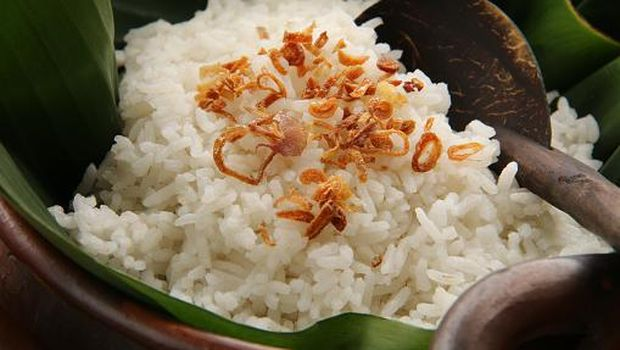

resep membuat Nasi Uduk
Kamu bisa menikmati Nasi Uduk enak dengan resep Nasi Uduk sederhana ini.
Bahan-bahan :
- 300 gram beras putih
- 1 lembar daun salam
- 2 cm lengkuas
- 200 ml santan, beri 1 sdt garam
- 400 ml air
Cara membuat :
- Cuci beras hingga bersih lalu tiriskan.
- Masukkan semua bahan-bahan ke dalam panci.
- Masak di atas api sedang hingga air habis dan aduk-aduk sesekali agar tidak lengket.
- Pindahkan ke dalam dandang yang sudah dipanaskan. Kukus hingga matang.
- Sajikan nasi uduk bersama irisan telur dadar, tempe orek, bakwan, bihun goreng dan beri taburan bawang goreng.